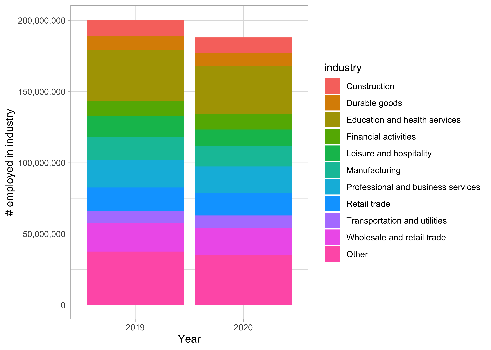
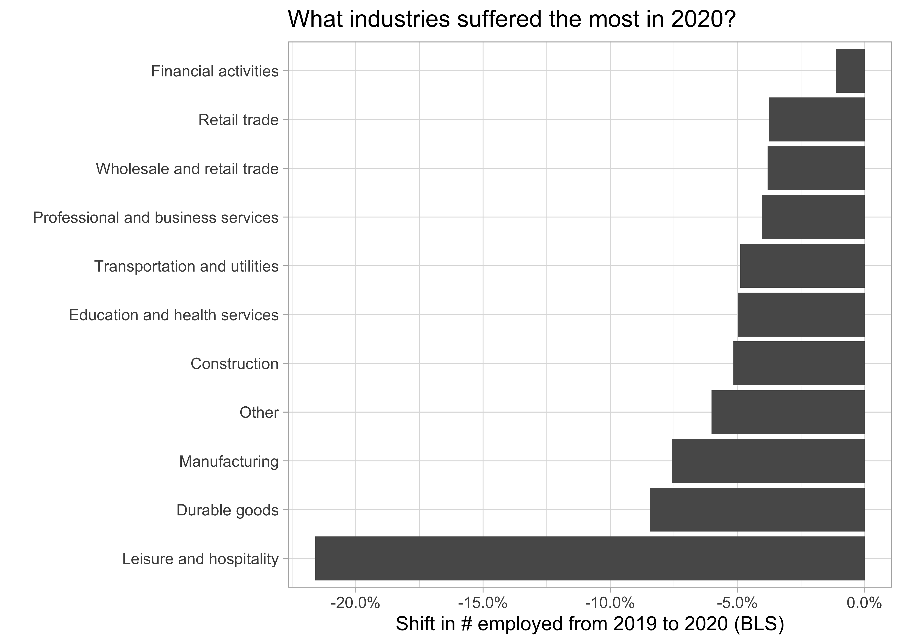
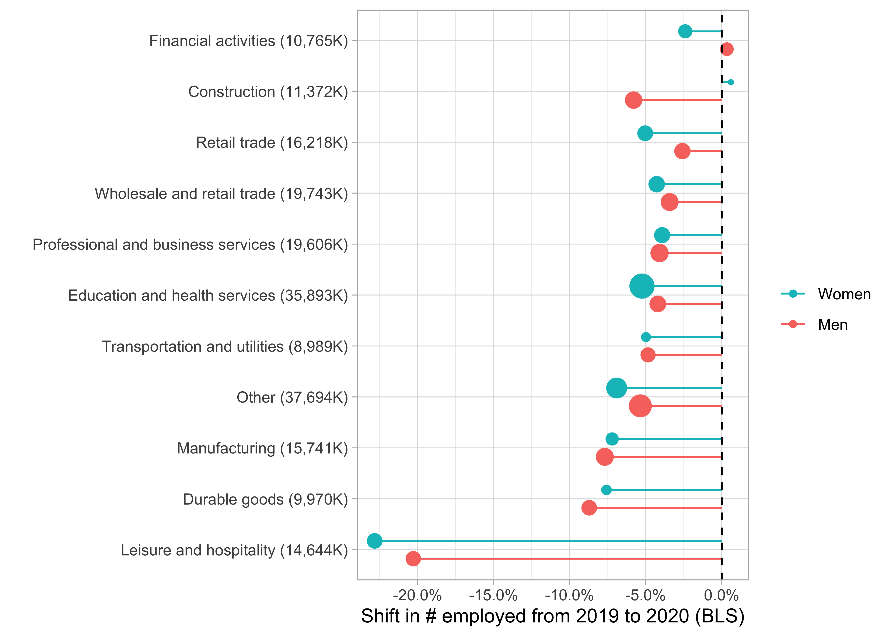

Introduction
In this post I’m going to reproduce an unusual chart I saw David Robinson make during one of his recent Tidy Tuesday screencasts looking at data from the US Bureau of Labour Statistics.
The point of this exercise is to a) force me to work through the steps that went in to making it, which improves my data visualisation skills, and b) give me something to refer back to in future if I want to make something similar for another dataset. It might even be useful for other people, hence why I’m sharing it!
Some of David’s code used deprecated functions like gather() and fct_lump(), so I’ll also be adapting it slightly in order to improve my familiarity with the latest innovations in R.
The chart’s called a “lollipop plot” and I think it does a really neat job of showing how the pandemic impacted US job numbers in 2020, broken down by industry and gender.
Here’s the plot:

It shows that the public administration sector was the only industry to win from the pandemic, while leisure and hopsitality lost heaviily; and that whether men or women lost more jobs was dependent on the industry.
Let’s reproduce the plot in steps.
Load libraries and data
First we load the relevant R packages and the dataset itself. In this case there were two datasets - one about employment figures and one about earnings, so we load just the employment data into an object called employed.
library(tidyverse)
library(tidytuesdayR)
library(scales)
library(glue)
theme_set(theme_light())
tt <- tt_load("2021-02-23")
##
## Downloading file 1 of 2: `earn.csv`
## Downloading file 2 of 2: `employed.csv`
employed <- tt$employed
Exploratory data analysis
Let’s take an initial look at the data:
head(employed)
## # A tibble: 6 x 7
## industry major_occupation minor_occupation race_gender industry_total employ_n
## <chr> <chr> <chr> <chr> <dbl> <dbl>
## 1 Agricul… Management, pro… Management, bus… TOTAL 2349000 961000
## 2 Agricul… Management, pro… Professional an… TOTAL 2349000 58000
## 3 Agricul… Service occupat… Protective serv… TOTAL 2349000 13000
## 4 Agricul… Service occupat… Service occupat… TOTAL 2349000 94000
## 5 Agricul… Sales and offic… Sales and relat… TOTAL 2349000 12000
## 6 Agricul… Sales and offic… Office and admi… TOTAL 2349000 96000
## # … with 1 more variable: year <dbl>
So we have employment numbers broken down by:
* Industry
* Major occupation
* Minor ocupation
* Race/gender
* Year.
Further exploratory analysis (not shown) reveals that we have 25 different industries, 5 different major occupations, 12 minor occupations, and 6 values for race/gender. We also have 660 missing values in the employment number columns so we’ll need to deal with this.
If we were doing a proper analysis/modelling project we’d need to do more thorough EDA here but this is enough for now.
Data cleaning
Let’s clean this data up a bit. Most importantly we need to:
- Add another column which will make it easier for us to slice our data by race, gender or not at all. We’ll call this
dimension.
- Remove any records with missing employment figures.
- Reduce the number of industries from 25 down to the biggest 10 and lump the remaining 15 into an “other” category
- For this we’ll use
fct_lump_n() instead of fct_lump() which was used in the original code.
employed_cleaned <- employed %>%
mutate(
dimension = case_when(
race_gender == "TOTAL" ~ "Total",
race_gender %in% c("Men", "Women") ~ "Gender",
TRUE ~ "Race")) %>%
filter(!is.na(employ_n)) %>%
mutate(industry = fct_lump_n(industry, n=10, w = employ_n), # note to self: same args as fct_lump() from original code
year = forcats::as_factor(year))
head(employed_cleaned)
## # A tibble: 6 x 8
## industry major_occupation minor_occupation race_gender industry_total employ_n
## <fct> <chr> <chr> <chr> <dbl> <dbl>
## 1 Other Management, pro… Management, bus… TOTAL 2349000 961000
## 2 Other Management, pro… Professional an… TOTAL 2349000 58000
## 3 Other Service occupat… Protective serv… TOTAL 2349000 13000
## 4 Other Service occupat… Service occupat… TOTAL 2349000 94000
## 5 Other Sales and offic… Sales and relat… TOTAL 2349000 12000
## 6 Other Sales and offic… Office and admi… TOTAL 2349000 96000
## # … with 2 more variables: year <fct>, dimension <chr>
Visualisation
Now we can get to the visualising part. A good place to start would be using a bar chart to see how 2019 employment numbers compare to 2019. We can make it stacked to see a breakdown by industry.
employed_cleaned %>%
filter(dimension == "Total", year %in% c(2019, 2020)) %>%
ggplot(aes(year, employ_n, fill = industry)) +
geom_col() +
scale_y_continuous(labels = comma) +
labs(y = "# employed in industry",
x = "Year")

This is a good start, we can see that around 10m jobs were lost overall, though it’s not easy to see which industries were worst hit. This is due to a psychologial effect called Weber’s law: humans are poor at measuring relative differences when there is no shared starting point.
Better plot
Let’s plot this in smarter way.
Firstly, we’ll gather the industry/major occupation/minor occupation columns into one called level using pivot_longer(). Then we’ll summarise employment numbers by groups so we can slice by various groups of interest (e.g. a particular gender or occupation level):
comparison <- employed_cleaned %>%
filter(year %in% c(2019, 2020)) %>%
mutate(major_occupation = paste(industry, major_occupation, sep = " - "),
minor_occupation = paste(major_occupation, minor_occupation, sep = " - ")) %>%
# gather(level, occupation, industry, major_occupation, minor_occupation) %>% # original code shown for comparison
pivot_longer(c(industry, major_occupation, minor_occupation), names_to = "level", values_to = "occupation") %>%
group_by(dimension, race_gender, level, occupation, year) %>%
summarize(employ_n = sum(employ_n)) %>%
ungroup() %>%
arrange(year)
Our data now looks like this - note the columns now pivotted into one called level:
head(comparison)
## # A tibble: 6 x 6
## dimension race_gender level occupation year employ_n
## <chr> <chr> <chr> <chr> <fct> <dbl>
## 1 Gender Men industry Construction 2019 10205000
## 2 Gender Men industry Durable goods 2019 7465000
## 3 Gender Men industry Education and health services 2019 9052000
## 4 Gender Men industry Financial activities 2019 5105000
## 5 Gender Men industry Leisure and hospitality 2019 7145000
## 6 Gender Men industry Manufacturing 2019 11111000
Next, for each group we’ll engineer the employment figures to get a more informative metric: The percentage difference between 2020 and 2019.
comparison <- comparison %>%
group_by(dimension, race_gender, level, occupation) %>%
summarize(ratio = last(employ_n) / first(employ_n), # get ratio of 2020 number divided by 2019
change = ratio - 1,
employed_2019 = first(employ_n)) %>% # get 2019 number
group_by(dimension, level, occupation) %>% # create a new group without the race_gender
mutate(total_2019 = sum(employed_2019)) %>% # gives us total for all race_genders
ungroup()
Our data now looks like this - note the new columns at the end:
head(comparison)
## # A tibble: 6 x 8
## dimension race_gender level occupation ratio change employed_2019 total_2019
## <chr> <chr> <chr> <chr> <dbl> <dbl> <dbl> <dbl>
## 1 Gender Men indu… Construct… 0.942 -0.0580 10205000 11372000
## 2 Gender Men indu… Durable g… 0.913 -0.0872 7465000 9970000
## 3 Gender Men indu… Education… 0.958 -0.0421 9052000 35893000
## 4 Gender Men indu… Financial… 1.00 0.00333 5105000 10765000
## 5 Gender Men indu… Leisure a… 0.797 -0.203 7145000 14644000
## 6 Gender Men indu… Manufactu… 0.923 -0.0770 11111000 15741000
Now we can make a better bar plot to summarise the impact of the pandemic, this time broken down by industry more explicitly:
comparison %>%
filter(dimension == "Total", level == "industry") %>%
mutate(occupation = fct_reorder(occupation, change)) %>%
ggplot(aes(change, occupation)) +
geom_col() +
scale_x_continuous(labels = percent) +
labs(title = "What industries suffered the most in 2020?",
x = "Shift in # employed from 2019 to 2020 (BLS)",
y = "")

This is definitely an improvement, but we can go one step further and introduce a new variable: gender.
The final plot
To build the lollipop plot we need to:
- Use
ggplot2 to plot change on the x-axis and occupation on the y-axis, adding 2019 employment number as the size aesthetic and race_gender as the colour aesthetic. This means we are plotting 4 variables at once!
- Use
geom_point() as our geom with the position argument to separate the points a bit for improved visibility.
- Use
geom_errorbarh() to give us horizontal lines from the 0% starting point.
- Use
geom_vline() to add a vertical dotted line at 0% to make it clearer what the starting point is.
- Make some aesthetic adjustments, like reversing the order of the legend so it makes sense, and adding 2019 employment figures to the y-axis labels for extra context.
comparison %>%
filter(dimension == "Gender", level == "industry") %>%
mutate(occupation = glue("{ occupation } ({ comma(total_2019 / 1000) }K)"),
occupation = fct_reorder(occupation, change)) %>%
ggplot(aes(change, occupation)) +
geom_errorbarh(aes(xmin = 0, xmax = change, color = race_gender),
height = 0,
position = position_dodge(width = .7)) +
geom_point(aes(size = employed_2019, color = race_gender),
position = position_dodge(width = .7)) +
geom_vline(lty = 2, xintercept = 0) +
scale_x_continuous(labels = percent) +
scale_color_discrete(guide = guide_legend(reverse = TRUE)) +
scale_size_continuous(labels = comma, guide = FALSE) +
labs(x = "Shift in # employed from 2019 to 2020 (BLS)",
y = "",
color = "",
size = "# employed 2019")

And we have our final plot! Now we can see clearly that Leisure & Hospitality was by far the biggest loser from the pandemic, with a loss of >20% of jobs from the 2019 fiture of 14.6m.
Job done :)